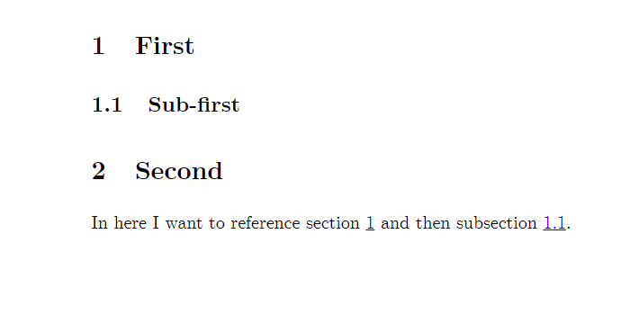

Labels
LaTeX allows you to label different environments using the \label{} tag and then later reference them in any part of your document using \ref{}. In the example, you can see how to label and reference sections and subsections. Objects that can be labelled include paragraphs, figures, footnotes, tables and many others. You can use any word you want for each label, as long as every time you use a unique label. It’s a good practice, to keep your labels short and related to the object you are labelling – that way, you can remember them more easily once you need to reference them later in your document. The example presents a good practice of labelling objects first with the abbreviation for their type (e.g. sec for section, tab for table or fig for figure), followed by a colon and then by a short label of the particular object. It’s a common practice to do it like this, however, feel free to come up with a labelling scheme of your own. The numbering for each object is automatic, so you don’t have to worry about remembering which paragraph or figure number you want to reference – LaTeX will update the number for you if you swap their order.
